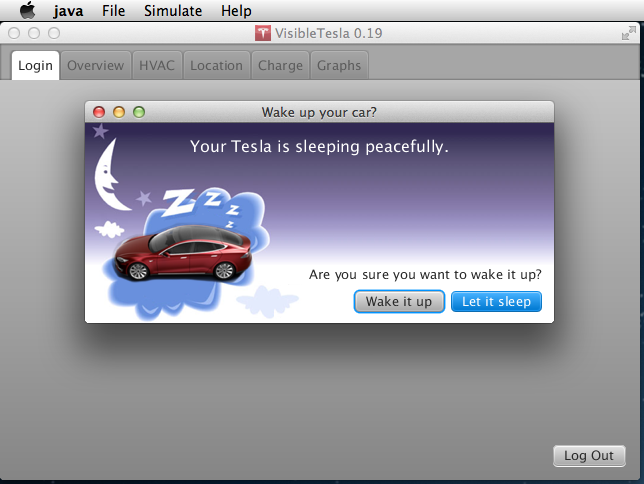

VisibleTesla lets you view, monitor, and control your Tesla Model S in much the same way as the official Tesla iPhone and Android apps do. Unlike those apps, VisibleTesla is not official, not from Tesla, and not supported.
VisibleTesla is free for personal and non-commercial use. It is based on the work of many members of the Tesla Motors Club Forum.
Disclaimer: Be careful when using this software as it can lock and unlock your car as well as control various functions relating to the charging system, sun roof, lights, horn, and other subsystems of the car. Don't to send your login and password to anyone other than Tesla or you are giving away the authentication details required to control your car. VisibleTesla does not store your password and only communicates with Tesla.
Use this application at your own risk. The author does not guarantee its proper functioning. This application attempts to use the same interfaces used by the official Tesla apps. However, it is possible that use of this application may cause unexpected damage for which nobody but you are responsible. Use of this application can change the settings on your car and may have negative consequences such as (but not limited to) unlocking the doors, opening the sun roof, or reducing the available charge in the battery.
The app has three menus: File, Options, and Help. The items of the first two menus will be described below. The Help menu allows you to bring up this documentation, the release notes, and a general "About" dialog.
The following screenshot shows the logged-in state:
If you are lucky enough to own more than one Tesla, you'll need to select which one you want to use. After VisibleTesla has successfully logged in it checks to see if you have more than one car. If you do, a dialog will pop up with a list of your vehicles. Choose the vehicle you're interested in and hit OK. At the moment you must quit the app and restart to use another vehicle.
The Overview tab shows basic state about the vehicle and gives access to commands like locking and unlocking, operating the panoramic roof (if you have one), flashing the lights, etc. These screen shots show the overview tab reflecting various states of the car. The second screen shows an information dialog that gives details about your car. That dialog is displayed in response to pressing the "Details" button. If you scroll all the way tot he bottom of the presented details information you will see a very long line of low level details. Unless you are technically curious or have been requested to provide debugging information, you can ignore this.


The next screen shot shows the panoramic roof in the vented state. The user vented the roof by pressing the Vent button. The next screenshot shows what the app will display when the driver's door and the rear trunk are open.


Next we have the HVAC tab which shows the state of that system. It also allows you to set the target temperature and turn on or off the system. This tab will display whether the front or rear defrosters are on, but it cannot control the defrosters. The fan blades will fill in to show the speed at which the fan is blowing. All empty is off, all full is maximum, and partially full are levels in between.
A temperature slider allows the user to select a specific target temperature for the vehicle. Unlike the car's internal controls, rather than clicking the up or down arrows to increase or decrease the temperature, the user simply moves the slider to the desired temperature. When the car is in Celsius mode, the slider ranges from 18 to 27 degrees and has steps at every half degree (18, 18.5, 19, 195, etc.). When the car is in Fahrenheit mode, the slider ranges from 65 to 80 degrees with stops at every degree. VisibleTesla displays the numberic temperature corresponding to the slider position in real time as the slider moves, however, the app only sends a command to the car when the user finally stops moving the slider. This reduces unneccesary communication with Tesla's servers and with the car.
This tab also displays the current interior and exterior temperature readings when they are available. The vehicle does not always supply this information. If no temperature readings are available, the tab will display "..." in place of the reading. It is not known when the vehicle decides to provide temperature readings and for how long. It is the case that if you activate the HVAC system, the readings will be made available and will remain available for an indeterminate period after the HVAC system is turned off.

The Location tab embeds a Google map to show the current location of your car with a marker. The marker is rotated to show your car's heading. There is a "Browse" button that will launch your default browser displaying a Google map with the car's location so you can get directions or perform any other Google map function.

Like a normal Google Map, you can zoom in and out, you can pan, and switch to satellite mode. If you click on the arrow representing your Tesla, an info window will pop up displaying the street address that is closest to your car.
The map will keep the car centered unless you manually pan the map. If you do so, you are indicating that you want to view a specific location and the app will not recenter the map as the car moves. You may always get back to "center-on-car" mode by clicking on the car. That will recenter the map, enter "center-on-car" mode, and show the address nearest the car in a popup info window.
If the user pans the map manually thereby exiting "center-on-car" mode, the car may eventually drive off the edge of the map. VisibleTesla doesn't allow that to happen. Instead it repositions the map slightly to keep the car just at the edge so at least part of it is visible.
Note: The contents of the info window will become stale as the car moves. To refresh it, simply close it and open it again.

The Charge tab shows the charge state and allows you to set the charge target and to start or stop charging. The slider allows you to specify how much charge you want the car to get. You can click on "Standard" or "Max" to make the slider jump to a preset value.
Notes:
There are quite a few pieces of data in the Charge Tab. The following table lists the items and gives a brief description of what they represent.
| Item | Description |
|---|---|
| Current | The amount of current being supplied to the vehicle |
| Voltage | The voltage being supplied to the vehicle |
| Charge Rate | How many miles of range are being recovered per hour of charging |
| Time Left | Estimated amount of time until the charge will be complete |
| State | Charging, Complete, Disconnected or Unknown |
| Pilot Current | The amount of current reported to be available from the attached power source |
| Battery Current | The current flowing into the battery (or out if negative) |
| Supercharger | Is the vehicle connected to a supercharger. HPWC does not qualify |
| Charger Power | The power in kW being supplied at the moment the reading was taken |
| # Range Charges | The number of consecutive range charges since the last standard charge. If you range charge three times in a row, this will display '3'. If you perform a Standard charge, it will be reset to 0. |
| Rated Range | The car's estimate of remaining range based on a fixed energy consumption in Watt-hours/mile (whpm). The fixed whpm is different for different vehicles (85kWh / 60kWh) and in different markets based on the regulatory test for that vehicle in that market. For example, in the US this is based on the EPA estimate. |
| Estimated Range | The car's predicted remaining range based on energy consumption during recent driving |
| Ideal Range | The car's estimate of remaining range based on a fixed energy consumption in Watt-hours/mile (whpm). The fixed whpm is an optimal figure determined by Tesla. |
| Note | It has been discovered that the range is derived slightly differently while the car is being charged vs. when it is not. This can cause the range to seem to drop by a couple of miles immediately after charging stops. |
The screen shots show the car when not connected to a charger, connected but not charging, and charging. In this case it is connected to an HPWC which is set to 60A.


This tab tracks and graphs basic statistics about the vehicle as a line chart. The x-axis represents the time at which the stats were gathered and the y-axis represents the values. An "Items" drop down list allows you to select which statistics are displayed. It also gives a color-coded legend to so you can tell which line represents which value. If you deselect a particular item it will not be displayed, but the statistics for that item will continue to be gathered.
Note that these statistics are only collected while VisibleTesla is running and only after you view the Graphs tab at least once. It will continue collecting stats in the background even if you move to another tab. If you quit the app the statistics will not be collected until the next time you restart VisibleTesla. If you have selected "Options->Allow Sleeping" and you don't use the app for 15 minutes, it will stop collecting samples. VisibleTesla stores the statistics it collects. If you quit the app and restart it later, it will display the old statistics and newly gathered ones.
Note: When you start VisibleTesla it does not automatically start collecting graph data. It only starts collecting data when you select the Graphs tab. Once you go to the Graphs tab once, it will continue collecting information in the background even if you switch to another tab.
You can interact with the line chart in several different ways.
The Graphs tab also allows you to select how you would like the information displayed. It can display a line chart, a line chart with markers (dots) at the points where readings were taken, or both. The default is to display both. You can choose your display option by bringing up a context menu on the chart. To do this, press the secondary mouse button (usually the right button) when the mouse is over the chart. A menu will appear with the three display choices (lines, markers, or both). Once you choose an option it will be stored on your computer and used the next time you start the app. You'll notice that if you choose the "both" option, the lines will be thin and semi-transparent to make the markers more visible. If you choose to display only lines, the lines will be more pronounced.
Note: Displaying markers for large amounts of information may cause a delay when the graph first loads or new variables are made visible for the first time.
There is another item in the File menu titled "Export Graph Data...". It does just what the name implies; exports all of the data collected by the Graphs tab. It saves the data to a Microsoft Excel file in a location that you choose. When you open an exported file in Excel, you'll see a column corresponding to the time at which each reading was taken and a column for each type of data collected. The time column contains is a long, unintelligible number that is an accurate, but obscure way to keep track of time down to the millisecond. You'll notice that the last column has a version of the timestamp represented as a human-readable date. The table will look something like this:
| TIMESTAMP | C_AMP | C_BAM | C_EST | C_ROC | C_SOC | C_VLT | S_PWR | S_SPD | |
|---|---|---|---|---|---|---|---|---|---|
| 1377743292 | 0 | 99.7 | -1 | 55 | 0 | 24 | 14 | 8/28/13 18:28:12 | |
| 1377746306 | 0 | 99.3 | -1 | 50 | 0 | 21 | 16 | 8/28/13 19:18:26 |
You may notice that some entries are blank. This is normal and can happen for a number of reasons. For example, the car may not have provided readings for that statistic at that time. The following screenshots show the Graphs tab in a number of different states.


If you have a lot of data accumulated, it can take quite a while to load it all. Please see the Graphs preferences which allow you to select how much data to load. To make this more palatable, VisibleTesla loads the data from most recent to oldest so that you can see and start interacting with the graph right away. Older data will continue to load in the background. Also, the visible data (the items you have selected) will load first, then the unselected items will load to make them ready to be displayed if you select them.
As your data is loading you'll notice a progress bar at the bottom of the window. The bar is split into two pieces. The first piece represents the progress loading the visible items, and the second part represents the invisible items. You'll notice that the size of these two parts is proportional to how many of each type of item you have. For example, if you have selected to display 4 items and hide 4 items, then the two parts will be the same size. If you're diplaying only 2 of the 8 items, then the first part of the bar will consume only 25% of the total length.

VisibleTesla now includes a very basic capability for scheduled activities like charging your car or turning on or off your air conditioning. For scheduled events to be executed, Visible Tesla must be running. That is, if you schedule your vehicle to turn on the HVAC system at 7:30AM so that your car is warm by the time you get to it at 7:45, then VisibleTesla must be running at 7:30AM to issue the commands. The screenshot below shows the Scheduler Tab.

Each row represents a command that can be scheduled independently. There are 8 rows meaning that up to 8 distinct schedules can be set. The fields for each row are as follows:
| Command | Description |
|---|---|
| HVAC: On | Turn on the HVAC system. |
| HVAC: Off | Turn off the HVAC system. |
| Charge: Start | Start Charging the vehicle. |
| Charge: Stop | Stop Charging the vehicle. |
| Charge: Low | Set the charge target to the car's minimum value or the value specified in the preferences pane. |
| Charge: Std | Set the charge target to the car's default standard charge. |
| Charge: Max | Set the charge target to the car's maximum charge. |
| Sleep | Equivalent to the user selecting "Allow Sleeping"from the "Options->Inactivity Mode" menu. |
| Daydream | Equivalent to the user selecting "Allow Daydreaming"from the "Options->Inactivity Mode" menu. |
| Awake | Equivalent to the user selecting "Stay Awake"from the "Options->Inactivity Mode" menu. |
| None | Don't execute a command of any type. |
Please remember that using this functionality can trigger activity that depletes your battery. You are solely responsible for any negative consequences that this might produce.
The Preferences tab allows users to control various options for the application as a whole and individual tabs within the application. Each Tab in VisibleTesla has it's own section within the preferences tab. There are also general preferences for the app as a whole. To set the preferences associated with a given tab, click the arrow next to the Tab name. The screenshot below shows the Preferences tab with the Login preferences selected. As you can see, there are currently no preferences available for this tab.

The preferences associated with some tabs are split into two groups: Basic and Advanced. In general, you should avoid changing the advanced options. In the screenshot below, you can see that the Graphs preferences are split into basic and advanced.

The available preferences are shown in the table below. All entries in red refer to advanced preferences.
This screen shot shows the "spinner" that is displayed when the app is communicating with the vehicle. Each tab has a refresh button and the app auto-refreshes every 30 seconds. Switching tabs automatically refreshes the newly selected tab.

In order to ensure that Tesla's servers do not become overloaded, the app automatically monitors the rate at which it makes requests. If you manually press refresh multiple times in rapid succession, you may find that the spinner rotates for a longer than usual. The app is automatically slowing down its requests to Tesla's servers in order to remain a good citizen. The app may also choose to refresh certain items less frequently than others. For example, the odometer reading on the Overview Tab. Since even at 60 mph the reading doesn't change much every minute, the app does not update it on every refresh. If the user presses the refresh button, it will force a new reading. Otherwise it is updated on every third auto-refresh.
If your car has version 5.0 or later firmware, it has a sleep mode which allows it to conserve power. When you connect to your car from VisibleTesla or one of Tesla's official apps, it will wake the car up if it is sleeping. You may want to avoid doing this accidentally, so when you log in to VisibleTesla, it determines whether the car is sleeping. If it is, you will be presented with a dialog asking if you want to wake up the car or let it sleep (see the screenshot below). If you click the "let it sleep" button, the app will exit without waking the car. Otherwise, the app will start normally.

When you are using VisibleTesla, it communicates with your car on a regular basis. This can have two potentially negative side-effects. First, this communication will keep your car from going to sleep. Second, it puts a continuous load on Tesla's servers. To deal with these issues there is an "Inactivity Mode" submenu of the Options menu. It lets you choose what you want the app to do when it has been idle (no user activity) for 15 minutes. There are three choices:
The simulation menu can be found within the Options menu. It allows you to look at car configurations other than your own. These screen shots show changing the color to red and using 21" dark rims.


Be careful when installing Java for Windows. It may ask you to install other software from partners. You do not need this software to run VisibleTesla and may safely decline the installation.